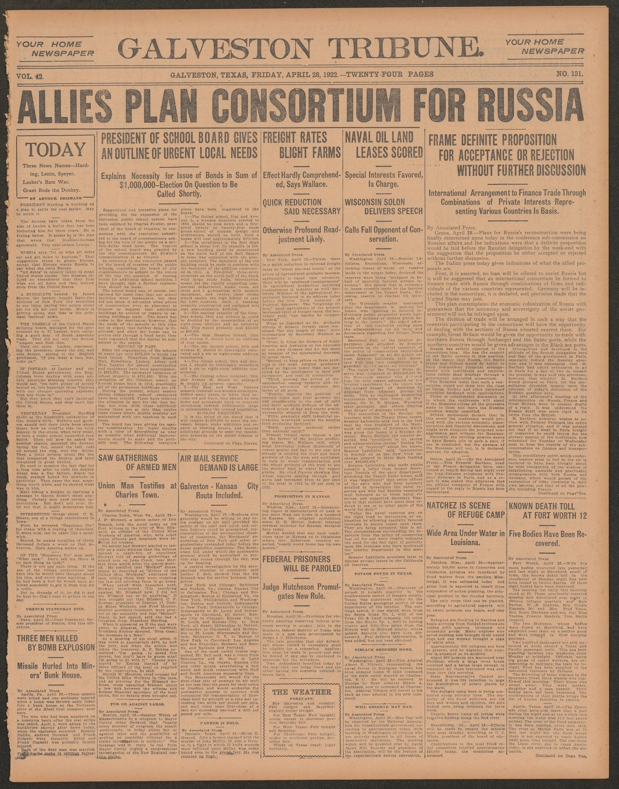
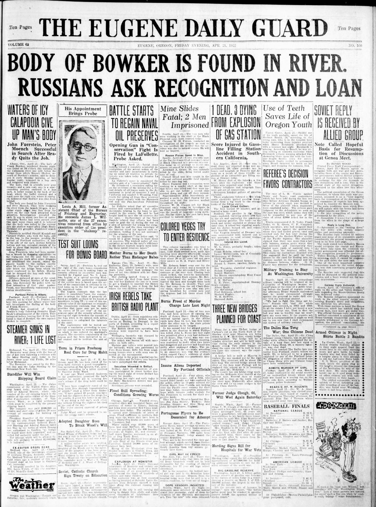
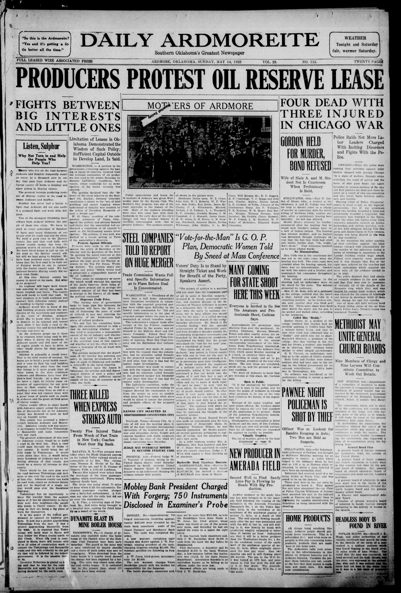

HN HN-431 · May 1, 1922 · Politics, Government & Diplomacy > Government Investigations & Abuse of Power > Oversight
Source: Indianapolis Times, p. 7 — original page.
Report: The paper reported a 59–0 Senate vote authorizing inquiry into Interior Secretary Albert B. Fall's leasing of U.S. naval petroleum reserves to private firms, highlighting controversy around Teapot Dome.
Assessment: This is evidence of an investigation starting, not a corruption verdict already established in May 1922. Later trials and Fall's bribery conviction transformed the investigation into an established major scandal. His specific criminal outcome and lease history merit their own court-document check; see also HN-436.
Authentic images retrieved from The Portal to Texas History (University of North Texas), Historic Oregon Newspapers (University of Oregon) and Gateway to Oklahoma History (Oklahoma Historical Society). Article crops are located using the archive's own OCR word coordinates and rendered at native crop resolution; article clips are assembled from the archive's own article-block images; page scans are reduced-size access renditions. No images were generated, mocked, or retouched.



Not yet acquired. Queued for provider-specific acquisition testing (see source-acquisition manifest).
URL (preserved verbatim): https://newspapers.library.in.gov/?a=d&d=IPT19220501.1.7
Saved research report: Historical_Newspaper_Event_Research_428-452_2026-10-23.md
Evidence note: A newspaper report means a historical publication made a claim; it does not establish that claim as fact. Contemporary reporting is separated from later scholarly context and our own assessment.